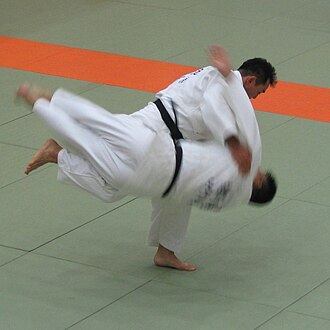

O Judô é uma arte marcial esportiva. Foi criado no Japão, em 1882, pelo professor Jigoro Kano. Ao criar esta arte marcial, Kano tinha como objetivo criar uma técnica de defesa pessoal, além de desenvolver o físico, espírito e mente. Esta arte marcial chegou ao Brasil no ano de 1922, em pleno período da imigração japonesa no país. O judô foi incluído nas Olimpíadas em 1972, após ter sido disputado em 1964, em Tóquio, por ser o esporte mais popular do país-sede.